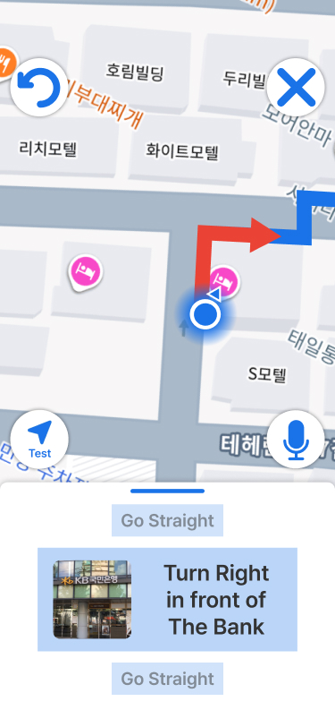
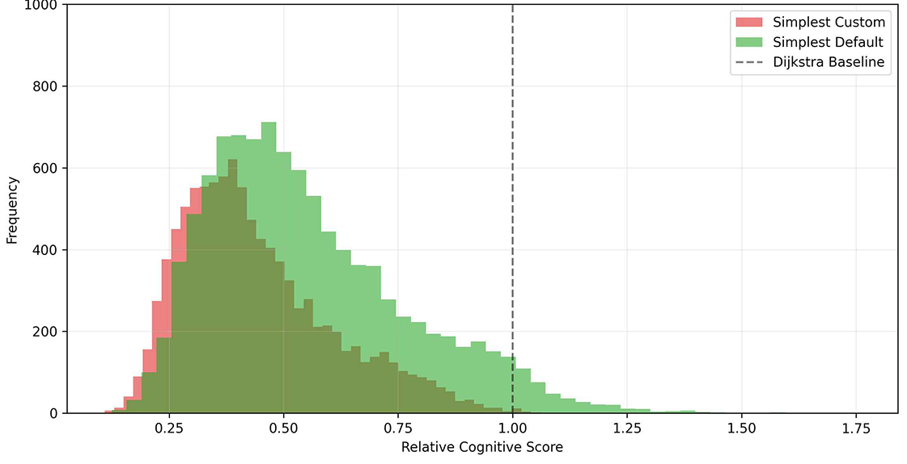

AI-based Personalized Map App for Safer Route Guidance, UX/UI Design, and Test-driven Iteration
I led product planning for an AI-based safety navigation app designed to help pedestrians find routes that are not only safe, but also easy to understand and follow.
As PM and UX/UI Designer, I owned the full product cycle—from problem definition and user research to feature design, developer collaboration, and iterative testing.
I integrated infrastructure data, usability-driven UX design, and a test-based feedback loop into one product system, enabling safety signals to translate into real, confident navigation decisions.
Most pedestrian navigation services optimize for shortest distance, but fail to account for how users actually experience routes.
As a result, users are often recommended routes that are technically optimal but confusing, difficult to follow, or perceived as unsafe.
The core problem was not a lack of data, but the absence of a system that translates safety and accessibility signals into a route experience users can understand and trust.
Navigation accuracy does not guarantee usability.
Users struggle because routes are cognitively demanding and difficult to follow, not because they are incorrect.
The real optimization target is route difficulty and clarity, not just distance.
Redefine navigation around difficulty—design routes that are easier to understand and follow.
I redefined “safe route” as a path that minimizes cognitive load and confusion, structuring routing logic and UX around difficulty rather than distance alone.
I built a routing foundation using infrastructure data (streetlights, police stations, foot traffic, etc.) to quantify safety and accessibility signals.
I validated product assumptions through alpha and beta testing cycles, using user feedback to continuously refine routing logic and UX decisions.
Conducted user interviews with 50 participants to identify navigation pain points and usability gaps.
Defined route difficulty as the key problem, not distance optimization.
Designed features and UX/UI framework focused on reducing cognitive load and improving clarity.
Collected data, collaborated with developers, and refined the product through testing cycles.

UX/UI key screens

Data layer
Demonstrated the ability to redefine product logic and translate user insights into a measurable improvement in usability and satisfaction.